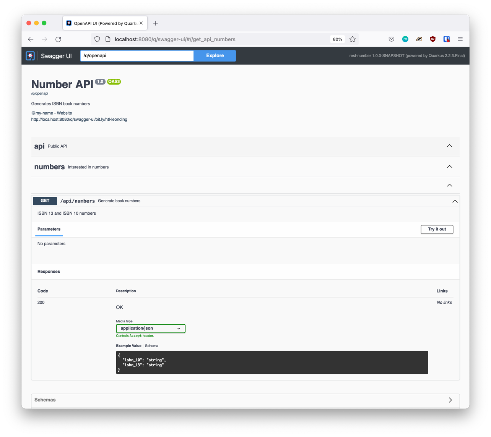

1. Preface
-
This is only an excerpt of this course:
-
It is strongly recommended to work through the original course.
-
Course-repo: agoncal/agoncal-course-quarkus-microservices
3. Preparations
3.1. JDK
java -versionopenjdk version "17" 2021-09-14 OpenJDK Runtime Environment Temurin-17+35 (build 17+35) OpenJDK 64-Bit Server VM Temurin-17+35 (build 17+35, mixed mode, sharing)
A good choice for the Java JDK is Adoptium/Temurin
| OS | How to install |
|---|---|
Windows |
|
linux (Ubuntu) |
|
MacOS |
|
-
JDK 11 is sufficient - Quarkus uses Java 11
3.2. GraalVM
ln -s /opt/graalvm-ce-java16-21.2.0 /opt/graalvm
export GRAALVM_HOME=/opt/graalvm/Contents/Home env | grep GRAAL $GRAALVM_HOME/bin/java -version $GRAALVM_HOME/bin/native-image --version
$GRAALVM_HOME/bin/gu install native-imagesudo xattr -r -d com.apple.quarantine path/to/graalvm/folder/4. Bootstrapping the Microservices
mkdir vintage-store
cd vintage-store#!/usr/bin/env bash
mvn -U io.quarkus:quarkus-maven-plugin:create \
-DprojectGroupId=at.htl.microservices \
-DprojectArtifactId=rest-number \
-DclassName="at.htl.microservices.number.NumberResource" \
-Dpath="/api/numbers" \
-Dextensions="resteasy-jsonb, smallrye-openapi"#!/usr/bin/env bash
mvn -U io.quarkus:quarkus-maven-plugin:create \
-DprojectGroupId=at.htl.microservices \
-DprojectArtifactId=rest-book \
-DclassName="at.htl.microservices.book.BookResource" \
-Dpath="/api/books" \
-Dextensions="resteasy-jsonb, smallrye-openapi"
cd rest-number
./mvnw clean quarkus:dev
5. Develop the Number Microservice
5.1. Exposing the Number REST Endpoint
package at.htl.microservices.number;
import java.time.Instant;
public class IsbnNumbers {
public String isbn10;
public String isbn13;
public Instant generationDate;
@Override
public String toString() {
return "IsbnNumbers{" +
"isbn10='" + isbn10 + '\'' +
", isbn13='" + isbn13 + '\'' +
", generationDate=" + generationDate +
'}';
}
}package at.htl.microservices.number;
import org.jboss.logging.Logger;
import javax.inject.Inject;
import javax.ws.rs.GET;
import javax.ws.rs.Path;
import javax.ws.rs.Produces;
import javax.ws.rs.core.MediaType;
import java.time.Instant;
import java.util.Random;
@Path("/api/numbers")
public class NumberResource {
@Inject
Logger logger; (1)
@GET
@Produces(MediaType.APPLICATION_JSON)
public IsbnNumbers generateIsbnNumbers() {
IsbnNumbers isbnNumbers = new IsbnNumbers();
isbnNumbers.isbn13 = "13-" + new Random().nextInt(100_000_000);
isbnNumbers.isbn10 = "10-" + new Random().nextInt(100_000);
isbnNumbers.generationDate = Instant.now();
logger.info("Numbers generated " + isbnNumbers); (2)
return isbnNumbers;
}
}| 1 | inject a logger |
| 2 | use the logger |
5.2. Excursus: JSON-B
| API | Description |
|---|---|
|
Allows customisation of a field name |
|
Prevents mapping of a field |
|
Customises the date format of a field |
|
Customises the number format of a field |
http localhost:8080/api/numberspublic class IsbnNumbers {
@JsonbProperty("isbn_13")
public String isbn13;
@JsonbProperty("isbn_10")
public String isbn10;
@JsonbTransient
public Instant generationDate;
// toString()
}HTTP/1.1 200 OK
Content-Length: 46
Content-Type: application/json
{
"isbn_10": "10-76318",
"isbn_13": "13-70991667"
}
5.3. Excursus: OpenAPI
| API | Description |
|---|---|
|
Describes the endpoint’s response |
|
Describes a single API operation on a path |
|
Root document object of the OpenAPI document |
|
The name of the method parameter |
|
Allows the definition of input and output data types |
|
Used to add tags to the REST endpoint contract |
5.4. OpenAPI/Swagger
package at.htl.microservices.number;
import org.eclipse.microprofile.openapi.annotations.media.Schema;
import javax.json.bind.annotation.JsonbProperty;
import javax.json.bind.annotation.JsonbTransient;
import java.time.Instant;
@Schema(description = "Several ISBN numbers for books")
public class IsbnNumbers {
@Schema(required = true)
@JsonbProperty("isbn_13")
public String isbn13;
@Schema(required = true)
@JsonbProperty("isbn_10")
public String isbn10;
@JsonbTransient
public Instant generationDate;
@Override
public String toString() {
return "IsbnNumbers{" +
"isbn10='" + isbn10 + '\'' +
", isbn13='" + isbn13 + '\'' +
", generationDate=" + generationDate +
'}';
}
}package at.htl.microservices.number;
import org.eclipse.microprofile.openapi.annotations.Operation;
import org.eclipse.microprofile.openapi.annotations.tags.Tag;
import org.jboss.logging.Logger;
import javax.inject.Inject;
import javax.ws.rs.GET;
import javax.ws.rs.Path;
import javax.ws.rs.Produces;
import javax.ws.rs.core.MediaType;
import java.time.Instant;
import java.util.Random;
@Path("/api/numbers")
@Tag(name="")
public class NumberResource {
@Inject
Logger logger;
@GET
@Produces(MediaType.APPLICATION_JSON)
@Operation(
summary = "Generate book numbers",
description = "ISBN 13 and ISBN 10 numbers"
)
public IsbnNumbers generateIsbnNumbers() {
IsbnNumbers isbnNumbers = new IsbnNumbers();
isbnNumbers.isbn13 = "13-" + new Random().nextInt(100_000_000);
isbnNumbers.isbn10 = "10-" + new Random().nextInt(100_000);
isbnNumbers.generationDate = Instant.now();
logger.info("Numbers generated " + isbnNumbers);
return isbnNumbers;
}
}package at.htl.microservices.number;
import org.eclipse.microprofile.openapi.annotations.ExternalDocumentation;
import org.eclipse.microprofile.openapi.annotations.OpenAPIDefinition;
import org.eclipse.microprofile.openapi.annotations.info.Contact;
import org.eclipse.microprofile.openapi.annotations.info.Info;
import org.eclipse.microprofile.openapi.annotations.tags.Tag;
import javax.ws.rs.core.Application;
@OpenAPIDefinition(
info = @Info(
title = "Number API",
description = "Generates ISBN book numbers",
version = "1.0",
contact = @Contact(name = "@my-name", url = "bit.ly/htl-leonding")
),
externalDocs = @ExternalDocumentation(url = "bit.ly/htl-leonding"),
tags = {
@Tag(name = "api", description = "Public API"),
@Tag(name = "numbers", description = "Interested in numbers")
}
)
public class NumberMicroservice extends Application {
}http localhost:8080/q/openapiopenapi: 3.0.3
info:
title: Number API
description: Generates ISBN book numbers
contact:
name: '@my-name'
url: bit.ly/htl-leonding
version: "1.0"
externalDocs:
url: bit.ly/htl-leonding
tags:
- name: api
description: Public API
- name: numbers
description: Interested in numbers
- name: ""
paths:
/api/numbers:
get:
tags:
- ""
summary: Generate book numbers
description: ISBN 13 and ISBN 10 numbers
responses:
"200":
description: OK
content:
application/json:
schema:
$ref: '#/components/schemas/IsbnNumbers'
components:
schemas:
IsbnNumbers:
description: Several ISBN numbers for books
required:
- isbn_10
- isbn_13
type: object
properties:
isbn_10:
type: string
isbn_13:
type: stringhttp localhost:8080/q/openapi Accept:application/json{
"components": {
"schemas": {
"IsbnNumbers": {
"description": "Several ISBN numbers for books",
"properties": {
"isbn_10": {
"type": "string"
},
"isbn_13": {
"type": "string"
}
},
"required": [
"isbn_10",
"isbn_13"
],
"type": "object"
}
}
},
"externalDocs": {
"url": "bit.ly/htl-leonding"
},
"info": {
"contact": {
"name": "@my-name",
"url": "bit.ly/htl-leonding"
},
"description": "Generates ISBN book numbers",
"title": "Number API",
"version": "1.0"
},
"openapi": "3.0.3",
"paths": {
"/api/numbers": {
"get": {
"description": "ISBN 13 and ISBN 10 numbers",
"responses": {
"200": {
"content": {
"application/json": {
"schema": {
"$ref": "#/components/schemas/IsbnNumbers"
}
}
},
"description": "OK"
}
},
"summary": "Generate book numbers",
"tags": [
""
]
}
}
},
"tags": [
{
"description": "Public API",
"name": "api"
},
{
"description": "Interested in numbers",
"name": "numbers"
},
{
"name": ""
}
]
}
5.5. Change the Port for the Endpoints
-
We will change the port from 8080 to 8701
quarkus.http.port=8701http :8701/api/numbersHTTP/1.1 200 OK
Content-Length: 46
Content-Type: application/json
{
"isbn_10": "10-86168",
"isbn_13": "13-67790513"
}5.6. Create a banner file
-
ie font "ANSI Shadow"
███╗ ██╗██╗ ██╗███╗ ███╗██████╗ ███████╗██████╗ ████╗ ██║██║ ██║████╗ ████║██╔══██╗██╔════╝██╔══██╗ ██╔██╗ ██║██║ ██║██╔████╔██║██████╔╝█████╗ ██████╔╝ ██║╚██╗██║██║ ██║██║╚██╔╝██║██╔══██╗██╔══╝ ██╔══██╗ ██║ ╚████║╚██████╔╝██║ ╚═╝ ██║██████╔╝███████╗██║ ██║ ╚═╝ ╚═══╝ ╚═════╝ ╚═╝ ╚═╝╚═════╝ ╚══════╝╚═╝ ╚═╝
5.7. Dev UI
5.8. Testing the Number Microservice
-
JUnit and restAssured sind bereits in der pom.xml eingetragen
package at.htl.microservices.number;
import io.quarkus.test.junit.QuarkusTest;
import org.junit.jupiter.api.Test;
import static io.restassured.RestAssured.given;
import static org.hamcrest.CoreMatchers.is;
import static org.hamcrest.CoreMatchers.startsWith;
import static org.hamcrest.Matchers.hasKey;
import static org.hamcrest.Matchers.not;
@QuarkusTest
public class NumberResourceTest {
@Test
public void testHelloEndpoint() {
given()
.when().get("/api/numbers")
.then()
.statusCode(200)
.body("isbn_13", startsWith("13-"))
.body("isbn_10", startsWith("10-"))
.body(not(hasKey("generationDate")));
}
}6. Develop the Book Microservice
package at.htl.microservices.book;
import java.time.Instant;
public class Book {
public String isbn13;
public String title;
public String author;
public int yearOfPublication;
public String genre;
public Instant creationTime;
@Override
public String toString() {
return "Book{" +
"isbn13='" + isbn13 + '\'' +
", title='" + title + '\'' +
", author='" + author + '\'' +
", yearOfPublication=" + yearOfPublication +
", genre='" + genre + '\'' +
", creationTime=" + creationTime +
'}';
}
}package at.htl.microservices.book;
import org.jboss.logging.Logger;
import javax.inject.Inject;
import javax.ws.rs.*;
import javax.ws.rs.core.MediaType;
import javax.ws.rs.core.Response;
import java.time.Instant;
@Path("/api/books")
public class BookResource {
@Inject
Logger logger;
@POST
@Produces(MediaType.APPLICATION_JSON)
@Consumes(MediaType.APPLICATION_FORM_URLENCODED)
public Response createABook(
@FormParam("title") String title,
@FormParam("author") String author,
@FormParam("year") int yearOfPubication,
@FormParam("genre") String genre
) {
Book book = new Book();
book.isbn13 = "We will get it from the Number Microservice";
book.title = title;
book.author = author;
book.yearOfPublication = yearOfPubication;
book.genre = genre;
book.creationTime = Instant.now();
logger.infof("Book created: %s", book);
return Response.status(201).entity(book).build();
}
}curl -X POST http://localhost:8080/api/books \
-d "title=Quarkus&author=Susi&year=2021&genre=IT"{"author":"Susi","creationTime":"2021-10-07T22:40:42.540116Z","genre":"IT","isbn13":"We will get it from the Number Microservice","title":"Quarkus","yearOfPublication":2021}6.1. Customizing the JSON Output
public class Book {
@JsonbProperty("isbn_13") (1)
public String isbn13;
public String title;
public String author;
@JsonbProperty("year_of_publication") (2)
public int yearOfPublication;
public String genre;
@JsonbProperty("creation_date") (3)
@JsonbDateFormat("yyyy-MM-dd") (4)
public Instant creationTime;
// ...
}curl -X POST http://localhost:8080/api/books \
-d "title=Quarkus&author=Susi&year=2021&genre=IT"{"author":"Susi","creation_date":"2021-10-07","genre":"IT","isbn_13":"We will get it from the Number Microservice","title":"Quarkus","year_of_publication":2021}http --form POST :8080/api/books title='Quarkus' author='Susi' year=2021 genre='IT'HTTP/1.1 201 Created
Content-Length: 163
Content-Type: application/json
{
"author": "Susi",
"creation_date": "2021-10-11",
"genre": "IT",
"isbn_13": "13-we will get it from the number microservice",
"title": "Quarkus",
"year_of_publication": 2021
}6.2. Documenting the Endpoint
-
start the book-microservice and look at the swagger
@Path("/api/books")
@Tag(name = "Book REST endpoint")
public class BookResource {
@Inject
Logger logger;
@POST
@Produces(MediaType.APPLICATION_JSON)
@Consumes(MediaType.APPLICATION_FORM_URLENCODED)
@Operation(
summary = "Creates a book",
description = "Creates a book with an ISBN number"
)
public Response createABook(
@FormParam("title") String title,
@FormParam("author") String author,
@FormParam("year") int yearOfPubication,
@FormParam("genre") String genre
) {
// ...
}
}@Schema(description = "This is a book")
public class Book {
@JsonbProperty("isbn_13")
@Schema(required = true)
public String isbn13;
@Schema(required = true)
public String title;
public String author;
@JsonbProperty("year_of_publication")
public int yearOfPublication;
public String genre;
@JsonbProperty("creation_date")
@JsonbDateFormat("yyyy-MM-dd")
@Schema(implementation = String.class, format = "date")
public Instant creationTime;
//...
}mp.openapi.extensions.smallrye.info.title=Book API
mp.openapi.extensions.smallrye.info.version=1.0
mp.openapi.extensions.smallrye.info.description=Creates books
mp.openapi.extensions.smallrye.info.contact.name=@susi
mp.openapi.extensions.smallrye.info.contact.url=https://twitter.com/susi6.3. Configuring Quarkus
-
ie font "ANSI Shadow"
██████╗ ██████╗ ██████╗ ██╗ ██╗ ██╔══██╗██╔═══██╗██╔═══██╗██║ ██╔╝ ██████╔╝██║ ██║██║ ██║█████╔╝ ██╔══██╗██║ ██║██║ ██║██╔═██╗ ██████╔╝╚██████╔╝╚██████╔╝██║ ██╗ ╚═════╝ ╚═════╝ ╚═════╝ ╚═╝ ╚═╝
quarkus.http.port=8702
mp.openapi.extensions.smallrye.info.title=Book API
mp.openapi.extensions.smallrye.info.version=1.0
mp.openapi.extensions.smallrye.info.description=Creates books
mp.openapi.extensions.smallrye.info.contact.name=@susi
mp.openapi.extensions.smallrye.info.contact.url=https://twitter.com/susi6.4. Testing the Endpoint
package at.htl.microservices.book;
import io.quarkus.test.junit.QuarkusTest;
import org.junit.jupiter.api.Test;
import static io.restassured.RestAssured.given;
import static org.hamcrest.CoreMatchers.is;
import static org.hamcrest.CoreMatchers.startsWith;
@QuarkusTest
public class BookResourceTest {
@Test
public void shouldCreateABook() {
given()
.formParam("title", "Understanding Quarkus")
.formParam("author","Susi")
.formParam("year",2020)
.formParam("genre", "IT")
.when()
.post("/api/books")
.then()
.statusCode(201)
.body("isbn_13", startsWith("13-"))
.body("title", is("Understanding Quarkus"))
.body("author", is("Susi"))
.body("year_of_publication", is(2020))
.body("genre", is("IT"))
.body("creation_date", startsWith("2021"));
}
}7. Establishing a Resilient Communication
-
https://microprofile.io/project/eclipse/microprofile-rest-client
-
microprofile REST Client is built on top of JAX-RS Client
-
Type-safe way to invoke endpoints
-
Injecting a proxy interface
| API | Description |
|---|---|
@RegisterRestClient |
Marker annotation to register a rest client at runtime |
@RestClient |
Injects an instance of a REST client in a type-safe way |
./mvnw quarkus:add-extension -Dextensions="rest-client"./mvnw clean quarkus:devcd ..
cd rest-number
./mvnw clean quarkus:devGET localhost:8701/api/numbers
###
POST localhost:8702/api/books
Content-Type: application/x-www-form-urlencoded
title=Quarkus&author=Susi&year=2021&genre=IT
###7.1. Implement REST-Client
package at.htl.microservices.book;
import org.eclipse.microprofile.rest.client.inject.RegisterRestClient;
import javax.ws.rs.GET;
import javax.ws.rs.Path;
import javax.ws.rs.Produces;
import javax.ws.rs.core.MediaType;
@RegisterRestClient
@Path("/api/numbers")
public interface NumberProxy {
@GET
@Produces(MediaType.APPLICATION_JSON)
IsbnThirteen generateIsbnNumbers();
}package at.htl.microservices.book;
import javax.json.bind.annotation.JsonbProperty;
public class IsbnThirteen {
@JsonbProperty("isbn_13") (1)
public String isbn13;
}| 1 | You have to change the name, so it works |
package at.htl.microservices.book;
import org.eclipse.microprofile.openapi.annotations.Operation;
import org.eclipse.microprofile.openapi.annotations.tags.Tag;
import org.eclipse.microprofile.rest.client.inject.RestClient;
// import ...
@Path("/api/books")
@Tag(name="Book REST endpoint")
public class BookResource {
@Inject
Logger logger;
@RestClient
NumberProxy proxy;
@POST
@Produces(MediaType.APPLICATION_JSON)
@Consumes(MediaType.APPLICATION_FORM_URLENCODED)
// @Operation(...)
public Response createABook(
//...
) {
Book book = new Book();
book.isbn13 = proxy.generateIsbnNumbers().isbn13;
book.title = title;
book.author = author;
book.yearOfPublication = yearOfPublication;
book.genre = genre;
book.creationTime = Instant.now();
logger.infof("Book created: %s", book);
return Response.status(201).entity(book).build();
}
}quarkus.http.port=8702
at.htl.microservices.book.NumberProxy/mp-rest/url=http://localhost:8701
POST localhost:8702/api/books
Content-Type: application/x-www-form-urlencoded
title=Quarkus&author=Susi&year=2021&genre=IThttp://localhost:8702/api/books
HTTP/1.1 201 Created
Content-Length: 128
Content-Type: application/json
{
"author": "Susi",
"creation_date": "2021-10-14",
"genre": "IT",
"isbn_13": "13-14543507",
"title": "Quarkus",
"year_of_publication": 2021
}
-
It is possible to shorten the endpoint url.
quarkus.http.port=8702
number.proxy/mp-rest/url=http://localhost:8701
// ...
@RegisterRestClient(configKey = "number.proxy")
@Path("/api/numbers")
public interface NumberProxy {
// ...
}-
Check, if it is still working
7.2. Mocking the Communication
-
https://quarkus.io/guides/getting-started-testing#mock-support
-
Mocking … Simulate the behavior of a real objects
-
Quarkus has a built-in mocking functionality
-
When this is not sufficient, you can use the JUnit Mockito extension
-
So we can’t test the book microservice w/o running the number microservice
| API | Description |
|---|---|
@Mock |
Overrides the bean you wish to mock with another class |
QuarkusMock |
Used to temporarily mock out any bean |
@InjectMock |
Results in a mock being injected in test methods |
InjectSpy |
Spies the logical path that was taken |
7.3. Create the MockNumberProxy
package at.htl.microservices.book;
import io.quarkus.test.Mock;
import org.eclipse.microprofile.rest.client.inject.RestClient;
@Mock
@RestClient
public class MockNumberProxy implements NumberProxy {
@Override
public IsbnThirteen generateIsbnNumbers() {
IsbnThirteen isbnThirteen = new IsbnThirteen();
isbnThirteen.isbn13 = "13-mock";
return isbnThirteen;
}
}7.5. Dealing with Communication Failure
-
https://microprofile.io/project/eclipse/microprofile-fault-tolerance
-
microprofile fault tolerance
-
remote communication fails
-
microservices under load
-
compensate failures
-
build resilient architecture
-
detect issue and handle automatically
-
SmallRye fault tolerance
| API | Description |
|---|---|
Fallback |
Provides an alternative solution for a failed execution |
@Retry |
Defines a criteria on when to retry |
@Timeout |
Defines a duration for timeout |
7.5.1. Add SmallRye Fault Tolerance extension
./mvnw quarkus:add-extension -Dextensions="io.quarkus:quarkus-smallrye-fault-tolerance"7.5.2. Implement Fault Tolerance
package at.htl.microservices.book;
// import ...
import javax.json.bind.JsonbBuilder;
import java.io.FileNotFoundException;
import java.io.PrintWriter;
import java.time.Instant;
@Path("/api/books")
@Tag(name = "Book REST endpoint")
public class BookResource {
@Inject
Logger logger;
@RestClient
NumberProxy proxy;
@POST
@Produces(MediaType.APPLICATION_JSON)
@Consumes(MediaType.APPLICATION_FORM_URLENCODED)
@Operation(
summary = "Creates a book",
description = "Creates a book with ISBN number"
)
@Retry(maxRetries = 3, delay = 3000)
@Fallback(fallbackMethod = "fallbackOnCreatingABook")
public Response createABook(
@FormParam("title") String title,
@FormParam("author") String author,
@FormParam("year") int yearOfPublication,
@FormParam("genre") String genre
) {
Book book = new Book();
book.isbn13 = proxy.generateIsbnNumbers().isbn13;
book.title = title;
book.author = author;
book.yearOfPublication = yearOfPublication;
book.genre = genre;
book.creationTime = Instant.now();
logger.infof("Book created: %s", book);
return Response.status(201).entity(book).build();
}
public Response fallbackOnCreatingABook(
String title,
String author,
int yearOfPublication,
String genre
) throws FileNotFoundException {
Book book = new Book();
book.isbn13 = "Will be set later";
book.title = title;
book.author = author;
book.yearOfPublication = yearOfPublication;
book.genre = genre;
book.creationTime = Instant.now();
saveBookOnDisk(book);
logger.warnf("Book saved on disk: %s", book);
return Response.status(206).entity(book).build();
}
private void saveBookOnDisk(Book book) throws FileNotFoundException {
String bookJson = JsonbBuilder.create().toJson(book);
try (PrintWriter out = new PrintWriter("book-" + Instant.now().toEpochMilli() + ".json")) {
out.println(bookJson);
}
}
}
8. Executing the Application
-
Now we will use docker-compose to run the app.
-
Each executable (project) will be dockerized.
8.1. Install graalvm
-
We are not really installing graalvm
-
We will
-
downloading graalvm into a folder
-
extract it
-
(create a symlink)
-
add environment variables
-
8.1.2. Extract graalvm-file
tar -xzvf graalvm-ce-java17-darwin-amd64-21.3.0.tar.gz8.1.3. Create Symbolic Link (symlink)
ln -s graalvm-ce-java17-darwin-amd64-21.3.0.tar.gz graalvm8.1.4. Install Native Image
cd /opt/graalvm/Contents/Home/bin
./gu install native-imageDownloading: Release index file from oca.opensource.oracle.com Downloading: Component catalog from www.graalvm.org Processing Component: Native Image Downloading: Component native-image: Native Image from github.com Installing new component: Native Image (org.graalvm.native-image, version 21.3.0)
8.1.5. Set Environment Variables
export GRAALVM_HOME=/opt/graalvm/Contents/Home
env | grep GRAAL
$GRAALVM_HOME/bin/java -version
$GRAALVM_HOME/bin/native-image --versionGRAALVM_HOME=/opt/graalvm/Contents/Home openjdk version "17.0.1" 2021-10-19 OpenJDK Runtime Environment GraalVM CE 21.3.0 (build 17.0.1+12-jvmci-21.3-b05) OpenJDK 64-Bit Server VM GraalVM CE 21.3.0 (build 17.0.1+12-jvmci-21.3-b05, mixed mode, sharing) GraalVM 21.3.0 Java 17 CE (Java Version 17.0.1+12-jvmci-21.3-b05
8.2. Building Native Linux Executables
-
We will dockerize the app in a Linux container, so we need Linux binaries.
mvn package -Dquarkus.package.type=native -Dmaven.test.skip=trueoutput
[INFO] [INFO] --- maven-resources-plugin:2.6:resources (default-resources) @ rest-number --- [INFO] Using 'UTF-8' encoding to copy filtered resources. [INFO] Copying 3 resources [INFO] [INFO] --- maven-compiler-plugin:3.8.1:compile (default-compile) @ rest-number --- [INFO] Changes detected - recompiling the module! [INFO] Compiling 3 source files to /Users/stuetz/SynologyDrive/htl/skripten/themen/jakartaee-microprofile/udemy-microservices-goncalves/labs/vintage-store/rest-number/target/classes [INFO] [INFO] --- quarkus-maven-plugin:2.3.1.Final:generate-code-tests (default) @ rest-number --- [INFO] [INFO] --- maven-resources-plugin:2.6:testResources (default-testResources) @ rest-number --- [INFO] Not copying test resources [INFO] [INFO] --- maven-compiler-plugin:3.8.1:testCompile (default-testCompile) @ rest-number --- [INFO] Not compiling test sources [INFO] [INFO] --- maven-surefire-plugin:3.0.0-M5:test (default-test) @ rest-number --- [INFO] Tests are skipped. [INFO] [INFO] --- maven-jar-plugin:2.4:jar (default-jar) @ rest-number --- [INFO] Building jar: /Users/stuetz/SynologyDrive/htl/skripten/themen/jakartaee-microprofile/udemy-microservices-goncalves/labs/vintage-store/rest-number/target/rest-number-1.0.0-SNAPSHOT.jar [INFO] [INFO] --- quarkus-maven-plugin:2.3.1.Final:build (default) @ rest-number --- [INFO] [org.jboss.threads] JBoss Threads version 3.4.2.Final [INFO] [io.quarkus.deployment.pkg.steps.JarResultBuildStep] Building native image source jar: /Users/stuetz/SynologyDrive/htl/skripten/themen/jakartaee-microprofile/udemy-microservices-goncalves/labs/vintage-store/rest-number/target/rest-number-1.0.0-SNAPSHOT-native-image-source-jar/rest-number-1.0.0-SNAPSHOT-runner.jar [INFO] [io.quarkus.deployment.pkg.steps.NativeImageBuildStep] Building native image from /Users/stuetz/SynologyDrive/htl/skripten/themen/jakartaee-microprofile/udemy-microservices-goncalves/labs/vintage-store/rest-number/target/rest-number-1.0.0-SNAPSHOT-native-image-source-jar/rest-number-1.0.0-SNAPSHOT-runner.jar [INFO] [io.quarkus.deployment.pkg.steps.NativeImageBuildStep] Running Quarkus native-image plugin on GraalVM 21.3.0 Java 17 CE (Java Version 17.0.1+12-jvmci-21.3-b05) [INFO] [io.quarkus.deployment.pkg.steps.NativeImageBuildRunner] /opt/graalvm/Contents/Home/bin/native-image -J-Dsun.nio.ch.maxUpdateArraySize=100 -J-Djava.util.logging.manager=org.jboss.logmanager.LogManager -J-Dvertx.logger-delegate-factory-class-name=io.quarkus.vertx.core.runtime.VertxLogDelegateFactory -J-Dvertx.disableDnsResolver=true -J-Dio.netty.leakDetection.level=DISABLED -J-Dio.netty.allocator.maxOrder=3 -J-Duser.language=en -J-Duser.country=US -J-Dfile.encoding=UTF-8 -H:InitialCollectionPolicy=com.oracle.svm.core.genscavenge.CollectionPolicy\$BySpaceAndTime -H:+JNI -H:+AllowFoldMethods -H:FallbackThreshold=0 -H:+ReportExceptionStackTraces -H:-AddAllCharsets -H:EnableURLProtocols=http -H:-UseServiceLoaderFeature -H:+StackTrace -H:-ParseOnce rest-number-1.0.0-SNAPSHOT-runner -jar rest-number-1.0.0-SNAPSHOT-runner.jar [rest-number-1.0.0-SNAPSHOT-runner:22926] classlist: 1,360.63 ms, 0.94 GB [rest-number-1.0.0-SNAPSHOT-runner:22926] (cap): 1,614.70 ms, 0.94 GB [rest-number-1.0.0-SNAPSHOT-runner:22926] setup: 3,265.18 ms, 0.94 GB The bundle named: messages, has not been found. If the bundle is part of a module, verify the bundle name is a fully qualified class name. Otherwise verify the bundle path is accessible in the classpath. 18:12:28,628 INFO [org.jbo.threads] JBoss Threads version 3.4.2.Final [rest-number-1.0.0-SNAPSHOT-runner:22926] (clinit): 608.56 ms, 5.09 GB [rest-number-1.0.0-SNAPSHOT-runner:22926] (typeflow): 1,843.88 ms, 5.09 GB [rest-number-1.0.0-SNAPSHOT-runner:22926] (objects): 13,823.93 ms, 5.09 GB [rest-number-1.0.0-SNAPSHOT-runner:22926] (features): 3,693.53 ms, 5.09 GB [rest-number-1.0.0-SNAPSHOT-runner:22926] analysis: 21,432.38 ms, 5.09 GB [rest-number-1.0.0-SNAPSHOT-runner:22926] universe: 1,628.18 ms, 5.09 GB [rest-number-1.0.0-SNAPSHOT-runner:22926] (parse): 1,932.56 ms, 5.09 GB [rest-number-1.0.0-SNAPSHOT-runner:22926] (inline): 4,292.92 ms, 6.01 GB [rest-number-1.0.0-SNAPSHOT-runner:22926] (compile): 19,448.10 ms, 6.14 GB [rest-number-1.0.0-SNAPSHOT-runner:22926] compile: 28,442.27 ms, 6.14 GB [rest-number-1.0.0-SNAPSHOT-runner:22926] image: 3,745.43 ms, 6.14 GB [rest-number-1.0.0-SNAPSHOT-runner:22926] write: 1,049.71 ms, 6.14 GB [rest-number-1.0.0-SNAPSHOT-runner:22926] [total]: 61,232.13 ms, 6.14 GB # Printing build artifacts to: /Users/stuetz/SynologyDrive/htl/skripten/themen/jakartaee-microprofile/udemy-microservices-goncalves/labs/vintage-store/rest-number/target/rest-number-1.0.0-SNAPSHOT-native-image-source-jar/rest-number-1.0.0-SNAPSHOT-runner.build_artifacts.txt [INFO] [io.quarkus.deployment.QuarkusAugmentor] Quarkus augmentation completed in 64118ms [INFO] ------------------------------------------------------------------------ [INFO] BUILD SUCCESS [INFO] ------------------------------------------------------------------------ [INFO] Total time: 01:22 min [INFO] Finished at: 2021-10-27T18:13:18+02:00 [INFO] ------------------------------------------------------------------------
-
Troubleshooting
-
Check the Quarkus - version. This fixed the error in my case.
-
ls -lh targettarget/rest-number-1.0.0-SNAPSHOT-runner███╗ ██╗██╗ ██╗███╗ ███╗██████╗ ███████╗██████╗
████╗ ██║██║ ██║████╗ ████║██╔══██╗██╔════╝██╔══██╗
██╔██╗ ██║██║ ██║██╔████╔██║██████╔╝█████╗ ██████╔╝
██║╚██╗██║██║ ██║██║╚██╔╝██║██╔══██╗██╔══╝ ██╔══██╗
██║ ╚████║╚██████╔╝██║ ╚═╝ ██║██████╔╝███████╗██║ ██║
╚═╝ ╚═══╝ ╚═════╝ ╚═╝ ╚═╝╚═════╝ ╚══════╝╚═╝ ╚═╝
Powered by Quarkus 2.3.1.Final
2021-10-27 18:27:59,799 INFO [io.quarkus] (main) rest-number 1.0.0-SNAPSHOT native (powered by Quarkus 2.3.1.Final) started in 0.017s. Listening on: http://0.0.0.0:8701
2021-10-27 18:27:59,804 INFO [io.quarkus] (main) Profile prod activated.
2021-10-27 18:27:59,804 INFO [io.quarkus] (main) Installed features: [cdi, resteasy, resteasy-jsonb, smallrye-context-propagation, smallrye-openapi, vertx]
-
It starts in 0.017s - this is quite impressive
curl localhost:8701/api/numbers{"isbn_10":"10-34614","isbn_13":"13-82953702"}%
8.2.1. Package the Project in a Docker Container
-
When compiling the sources in a Docker container, we get binaries for Linux
mvn package -Dquarkus.package.type=native \
-Dquarkus.native.container-build=true \
-Dmaven.test.skip=trueoutput
[INFO] Scanning for projects... [INFO] [INFO] ------------------< at.htl.microservices:rest-number >------------------ [INFO] Building rest-number 1.0.0-SNAPSHOT [INFO] --------------------------------[ jar ]--------------------------------- [INFO] [INFO] --- quarkus-maven-plugin:2.3.1.Final:generate-code (default) @ rest-number --- [INFO] [INFO] --- maven-resources-plugin:2.6:resources (default-resources) @ rest-number --- [INFO] Using 'UTF-8' encoding to copy filtered resources. [INFO] Copying 3 resources [INFO] [INFO] --- maven-compiler-plugin:3.8.1:compile (default-compile) @ rest-number --- [INFO] Nothing to compile - all classes are up to date [INFO] [INFO] --- quarkus-maven-plugin:2.3.1.Final:generate-code-tests (default) @ rest-number --- [INFO] [INFO] --- maven-resources-plugin:2.6:testResources (default-testResources) @ rest-number --- [INFO] Not copying test resources [INFO] [INFO] --- maven-compiler-plugin:3.8.1:testCompile (default-testCompile) @ rest-number --- [INFO] Not compiling test sources [INFO] [INFO] --- maven-surefire-plugin:3.0.0-M5:test (default-test) @ rest-number --- [INFO] Tests are skipped. [INFO] [INFO] --- maven-jar-plugin:2.4:jar (default-jar) @ rest-number --- [INFO] [INFO] --- quarkus-maven-plugin:2.3.1.Final:build (default) @ rest-number --- [INFO] [org.jboss.threads] JBoss Threads version 3.4.2.Final [INFO] [io.quarkus.deployment.pkg.steps.JarResultBuildStep] Building native image source jar: /Users/stuetz/SynologyDrive/htl/skripten/themen/jakartaee-microprofile/udemy-microservices-goncalves/labs/vintage-store/rest-number/target/rest-number-1.0.0-SNAPSHOT-native-image-source-jar/rest-number-1.0.0-SNAPSHOT-runner.jar [INFO] [io.quarkus.deployment.pkg.steps.NativeImageBuildStep] Building native image from /Users/stuetz/SynologyDrive/htl/skripten/themen/jakartaee-microprofile/udemy-microservices-goncalves/labs/vintage-store/rest-number/target/rest-number-1.0.0-SNAPSHOT-native-image-source-jar/rest-number-1.0.0-SNAPSHOT-runner.jar [INFO] [io.quarkus.deployment.pkg.steps.NativeImageBuildContainerRunner] Using docker to run the native image builder [INFO] [io.quarkus.deployment.pkg.steps.NativeImageBuildContainerRunner] Checking image status quay.io/quarkus/ubi-quarkus-native-image:21.2-java11 21.2-java11: Pulling from quarkus/ubi-quarkus-native-image Digest: sha256:6079eb01031a117a92c75d17c44498a981cf92a648e3cac83801471aedc88e9c Status: Image is up to date for quay.io/quarkus/ubi-quarkus-native-image:21.2-java11 quay.io/quarkus/ubi-quarkus-native-image:21.2-java11 [INFO] [io.quarkus.deployment.pkg.steps.NativeImageBuildStep] Running Quarkus native-image plugin on GraalVM 21.2.0 Java 11 CE (Java Version 11.0.12+6-jvmci-21.2-b08) [INFO] [io.quarkus.deployment.pkg.steps.NativeImageBuildRunner] docker run --env LANG=C --rm -v /Users/stuetz/SynologyDrive/htl/skripten/themen/jakartaee-microprofile/udemy-microservices-goncalves/labs/vintage-store/rest-number/target/rest-number-1.0.0-SNAPSHOT-native-image-source-jar:/project:z --name build-native-SwsvB quay.io/quarkus/ubi-quarkus-native-image:21.2-java11 -J-Dsun.nio.ch.maxUpdateArraySize=100 -J-Djava.util.logging.manager=org.jboss.logmanager.LogManager -J-Dvertx.logger-delegate-factory-class-name=io.quarkus.vertx.core.runtime.VertxLogDelegateFactory -J-Dvertx.disableDnsResolver=true -J-Dio.netty.leakDetection.level=DISABLED -J-Dio.netty.allocator.maxOrder=3 -J-Duser.language=en -J-Duser.country=US -J-Dfile.encoding=UTF-8 -H:InitialCollectionPolicy=com.oracle.svm.core.genscavenge.CollectionPolicy\$BySpaceAndTime -H:+JNI -H:+AllowFoldMethods -H:FallbackThreshold=0 -H:+ReportExceptionStackTraces -H:-AddAllCharsets -H:EnableURLProtocols=http -H:-UseServiceLoaderFeature -H:+StackTrace -H:-ParseOnce rest-number-1.0.0-SNAPSHOT-runner -jar rest-number-1.0.0-SNAPSHOT-runner.jar [rest-number-1.0.0-SNAPSHOT-runner:26] classlist: 7,566.61 ms, 0.94 GB [rest-number-1.0.0-SNAPSHOT-runner:26] (cap): 853.63 ms, 0.94 GB [rest-number-1.0.0-SNAPSHOT-runner:26] setup: 3,924.04 ms, 0.93 GB The bundle named: messages, has not been found. If the bundle is part of a module, verify the bundle name is a fully qualified class name. Otherwise verify the bundle path is accessible in the classpath. 18:24:32,075 INFO [org.jbo.threads] JBoss Threads version 3.4.2.Final [rest-number-1.0.0-SNAPSHOT-runner:26] (clinit): 2,086.13 ms, 3.62 GB [rest-number-1.0.0-SNAPSHOT-runner:26] (typeflow): 21,140.88 ms, 3.62 GB [rest-number-1.0.0-SNAPSHOT-runner:26] (objects): 30,809.78 ms, 3.62 GB [rest-number-1.0.0-SNAPSHOT-runner:26] (features): 2,170.73 ms, 3.62 GB [rest-number-1.0.0-SNAPSHOT-runner:26] analysis: 59,841.05 ms, 3.62 GB [rest-number-1.0.0-SNAPSHOT-runner:26] universe: 4,101.54 ms, 3.62 GB [rest-number-1.0.0-SNAPSHOT-runner:26] (parse): 9,845.88 ms, 3.42 GB [rest-number-1.0.0-SNAPSHOT-runner:26] (inline): 10,023.26 ms, 4.12 GB [rest-number-1.0.0-SNAPSHOT-runner:26] (compile): 42,131.36 ms, 4.03 GB [rest-number-1.0.0-SNAPSHOT-runner:26] compile: 65,949.40 ms, 4.03 GB [rest-number-1.0.0-SNAPSHOT-runner:26] image: 8,307.99 ms, 4.06 GB [rest-number-1.0.0-SNAPSHOT-runner:26] write: 4,703.13 ms, 4.06 GB [rest-number-1.0.0-SNAPSHOT-runner:26] [total]: 155,221.80 ms, 4.06 GB # Printing build artifacts to: /project/rest-number-1.0.0-SNAPSHOT-runner.build_artifacts.txt [INFO] [io.quarkus.deployment.pkg.steps.NativeImageBuildRunner] docker run --env LANG=C --rm -v /Users/stuetz/SynologyDrive/htl/skripten/themen/jakartaee-microprofile/udemy-microservices-goncalves/labs/vintage-store/rest-number/target/rest-number-1.0.0-SNAPSHOT-native-image-source-jar:/project:z --entrypoint /bin/bash quay.io/quarkus/ubi-quarkus-native-image:21.2-java11 -c objcopy --strip-debug rest-number-1.0.0-SNAPSHOT-runner [INFO] [io.quarkus.deployment.QuarkusAugmentor] Quarkus augmentation completed in 164693ms [INFO] ------------------------------------------------------------------------ [INFO] BUILD SUCCESS [INFO] ------------------------------------------------------------------------ [INFO] Total time: 02:47 min [INFO] Finished at: 2021-10-27T20:26:42+02:00 [INFO] ------------------------------------------------------------------------
*Because it is compiled in a Linux Docker continer, it is not possible to start the app under MacOS.
target/rest-number-1.0.0-SNAPSHOT-runnerzsh: exec format error: target/rest-number-1.0.0-SNAPSHOT-runner
-
Troubleshooting
Error 137 → increase memory for Docker-Desktop
[ERROR] Caused by: java.lang.RuntimeException: Image generation failed. Exit code was 137 which indicates an out of memory error. Consider increasing the Xmx value for native image generation by setting the "quarkus.native.native-image-xmx" property
8.3. Build Docker image
-
Two options:
-
Jib (no need for Docker running)
-
Docker Extensions
-
s2i (für openShift)
-
-
mvn quarkus:add-extension -Dextensions="docker"
<dependencies>
...
<dependency>
<groupId>io.quarkus</groupId>
<artifactId>quarkus-container-image-docker</artifactId>
</dependency>
</dependencies>FROM registry.access.redhat.com/ubi8/ubi-minimal:8.4 (1)
WORKDIR /work/
RUN chown 1001 /work \
&& chmod "g+rwX" /work \
&& chown 1001:root /work
COPY --chown=1001:root target/*-runner /work/application
EXPOSE 8080 (2)
USER 1001
CMD ["./application", "-Dquarkus.http.host=0.0.0.0"]| 1 | Small Linux w/o Java |
| 2 | we will use 8701 for rest-number and 8702 for rest-book |
| Change the port-numbers in the two project to 8701 and 8702 |
mvn package -Dquarkus.package.type=native \
-Dquarkus.native.container-build=true \
-Dquarkus.container-image.build=true... [INFO] [io.quarkus.deployment.QuarkusAugmentor] Quarkus augmentation completed in 133937ms [INFO] ------------------------------------------------------------------------ [INFO] BUILD SUCCESS [INFO] ------------------------------------------------------------------------ [INFO] Total time: 02:22 min [INFO] Finished at: 2021-10-27T20:59:52+02:00 [INFO] ------------------------------------------------------------------------
docker image ls | grep stuetzstuetz/rest-book 1.0.0-SNAPSHOT 866272ea114f 2 minutes ago 158MB stuetz/rest-number 1.0.0-SNAPSHOT ff6976b0370f 5 minutes ago 151MB
8.4. Create a docker-compose.yml
version : "3"
services:
rest-number:
image: "stuetz/rest-number:1.0.0-SNAPSHOT"
ports:
- "8701:8701"
rest-book:
image: "stuetz/rest-book:1.0.0-SNAPSHOT"
ports:
- "8702:8702"
environment:
- NUMBER_PROXY_MP_REST_URL=http://rest-number:8701-
How do we get the environment variable
-
In the application.properties of rest-book project your find
number.proxy/mp-rest/url=http://localhost:8701 -
Now convert this for the docker-compose.yml-file
-
copy the line into the yml-file
number.proxy/mp-rest/url=http://localhost:8701 -
make all uppercase
NUMBER.PROXY/MP-REST/URL=http://localhost:8701 -
replace all non-letter-chars with underline
NUMBER_PROXY_MP_REST_URL=http://localhost:8701 -
replace localhost with the name of the docker-compose - service
NUMBER_PROXY_MP_REST_URL=http://rest-number:8701
-
-
8.5. Run the docker-compose Services
docker-compose -f vintage-docker-compose.yml up-
we omit -d, so we can watch the logs
output
[+] Running 3/3 ⠿ Network vintage-store_default Created 0.0s ⠿ Container vintage-store-rest-number-1 Created 0.1s ⠿ Container vintage-store-rest-book-1 Created 0.1s Attaching to vintage-store-rest-book-1, vintage-store-rest-number-1 vintage-store-rest-number-1 | vintage-store-rest-number-1 | vintage-store-rest-number-1 | ███╗ ██╗██╗ ██╗███╗ ███╗██████╗ ███████╗██████╗ vintage-store-rest-number-1 | ████╗ ██║██║ ██║████╗ ████║██╔══██╗██╔════╝██╔══██╗ vintage-store-rest-number-1 | ██╔██╗ ██║██║ ██║██╔████╔██║██████╔╝█████╗ ██████╔╝ vintage-store-rest-number-1 | ██║╚██╗██║██║ ██║██║╚██╔╝██║██╔══██╗██╔══╝ ██╔══██╗ vintage-store-rest-number-1 | ██║ ╚████║╚██████╔╝██║ ╚═╝ ██║██████╔╝███████╗██║ ██║ vintage-store-rest-number-1 | ╚═╝ ╚═══╝ ╚═════╝ ╚═╝ ╚═╝╚═════╝ ╚══════╝╚═╝ ╚═╝ vintage-store-rest-number-1 | vintage-store-rest-number-1 | vintage-store-rest-number-1 | vintage-store-rest-number-1 | Powered by Quarkus 2.3.1.Final vintage-store-rest-number-1 | 2021-10-28 08:44:40,801 INFO [io.quarkus] (main) rest-number 1.0.0-SNAPSHOT native (powered by Quarkus 2.3.1.Final) started in 0.022s. Listening on: http://0.0.0.0:8701 vintage-store-rest-number-1 | 2021-10-28 08:44:40,801 INFO [io.quarkus] (main) Profile prod activated. vintage-store-rest-number-1 | 2021-10-28 08:44:40,801 INFO [io.quarkus] (main) Installed features: [cdi, resteasy, resteasy-jsonb, smallrye-context-propagation, smallrye-openapi, vertx] vintage-store-rest-book-1 | ██████╗ ██████╗ ██████╗ ██╗ ██╗ vintage-store-rest-book-1 | ██╔══██╗██╔═══██╗██╔═══██╗██║ ██╔╝ vintage-store-rest-book-1 | ██████╔╝██║ ██║██║ ██║█████╔╝ vintage-store-rest-book-1 | ██╔══██╗██║ ██║██║ ██║██╔═██╗ vintage-store-rest-book-1 | ██████╔╝╚██████╔╝╚██████╔╝██║ ██╗ vintage-store-rest-book-1 | ╚═════╝ ╚═════╝ ╚═════╝ ╚═╝ ╚═╝ vintage-store-rest-book-1 | Powered by Quarkus 2.3.1.Final vintage-store-rest-book-1 | 2021-10-28 08:44:40,816 INFO [io.quarkus] (main) rest-book 1.0.0-SNAPSHOT native (powered by Quarkus 2.3.1.Final) started in 0.020s. Listening on: http://0.0.0.0:8702 vintage-store-rest-book-1 | 2021-10-28 08:44:40,817 INFO [io.quarkus] (main) Profile prod activated. vintage-store-rest-book-1 | 2021-10-28 08:44:40,817 INFO [io.quarkus] (main) Installed features: [cdi, rest-client, resteasy, resteasy-jsonb, smallrye-context-propagation, smallrye-fault-tolerance, smallrye-openapi, vertx]
-
Now we will access the endpoint
-
curl
curl -X POST http://localhost:8702/api/books -d "title=Quarkus&author=Susi&year=2021&genre=IT"output{"author":"Susi","creation_date":"2021-10-28","genre":"IT","isbn_13":"13-21142163","title":"Quarkus","year_of_publication":2021}% -
requests.http
POST localhost:8702/api/books Content-Type: application/x-www-form-urlencoded title=Quarkus&author=Susi&year=2021&genre=IToutput -
httpie
http --form POST :8702/api/books title='Quarkus' author='Susi' year=2021 genre='IT'output
-
8.6. Test the Resilience
docker container kill vintage-store-rest-number-1 curl -X POST http://localhost:8702/api/books -d "title=Quarkus&author=Susi&year=2021&genre=IT"{"author":"Susi","creation_date":"2021-10-28","genre":"IT","isbn_13":"Will be set later","title":"Quarkus","year_of_publication":2021}%
docker-compose -f vintagestore-docker-compose.yml down[+] Running 3/3 ⠿ Container vintage-store-rest-book-1 Remove... 0.2s ⠿ Container vintage-store-rest-number-1 Remo... 0.1s ⠿ Network vintage-store_default Removed 0.1s